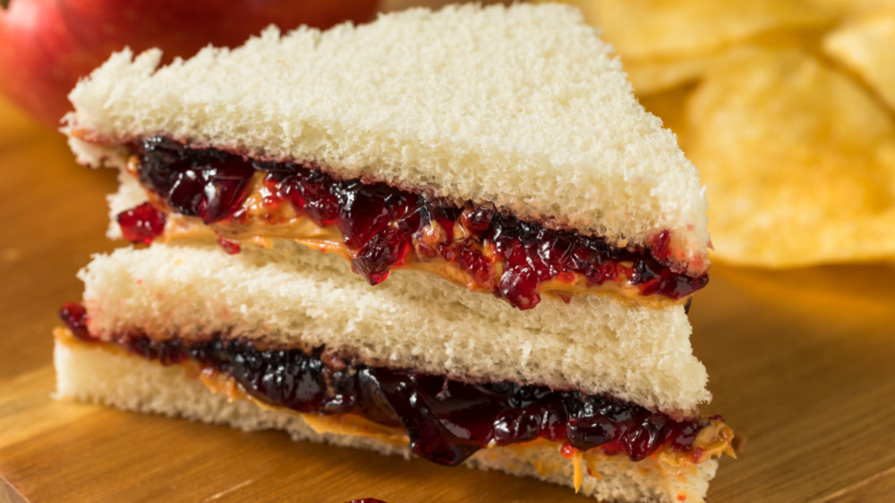

Banana Bread

Description
This is a recipe for the last sandwich you will ever need to know how to make. It is a staple food that covers all essential food groups. Eating these daily can only result in the best health results.
Ingredients
- 2 slices sandwich bread
- 2 tablespoons peanut butter
- 2 teaspoons grape jelly
Directions
- Spread peanut butter on one piece of bread.
- Spread the jelly on the other piece of bread.
- Put the two pieces together to create a sandwich.
- Cut at an angle for improved taste.